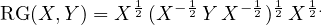

-
Limit of quasi-arithmetic power means.
- First, let us consider the scalar geometric mean as the limit
of power means Mp(x,y) = when p → 0:
A quasi-arithmetic mean induced by strictly increasing and differentiable real-valued functional
generators f(u) is defined by
Quasi-arithmetic means are also called Kolmogorov-Nagumo means [8, 10]. Since power means
Mp(x,y) = Mfp(x,y) are quasi-arithmetic means for the smooth family of generators
with G(x,y) = M0(x,y), we get by extension the following matrix geometric mean by taking the
corresponding matrix quasi-arithmetic mean:
where exp(X) and log(X) denote the matrix exponential and the matrix logarithm of X, respectively.
This matrix mean is called the log-Euclidean matrix mean [2]. One drawback of this matrix
geometric mean (MGM) is that it is not operator monotone where a matrix mean M(X,Y ) is said
operator monotone [3] if for X′≼ X and Y ′≼ Y , we have M(X′,Y ′) ≼ M(X,Y ) where ≼ denotes
Loewner partial ordering on the cone ℙ: P ≼ Q if and only if Q - P is positive semi-definite. The
scalar geometric mean satisfies the operator monotone property: if x′ ≤ x and y′ ≤ y then we have
G(x′,y′) ≤ G(x,y). Ando-Li-Mathias [1] defined a set of 10 properties that a matrix geometric mean
should satisfy, including the operator monotone property.
-
Riemannian centroid.
- Second, the scalar geometric mean can be interpreted as the unique centroid with
respect to the distance ρ(x,y) = :
Let ℙ denote the set of symmetric positive-definite d × d matrices. Consider the Riemannian manifold
(ℙ,g) where g is the so-called trace metric, i.e., a collection of smoothly varying inner products gP for
P ∈ ℙ defined by
where S1 and S2 are matrices belonging to the vector space of symmetric d × d matrices. S1 and S2
are geometrically interpreted as vectors of the tangent plane TP of P ∈ ℙ. The Riemannian geodesic
distance is
where λi(M) denotes the i-th largest real eigenvalue of a symmetric matrix M, ∥⋅∥F denotes the
Frobenius norm, and log P is the unique matrix logarithm of a SPD matrix P. It follows that the
Riemannian matrix geometric mean is

This mean is proven to be the unique solution to the matrix Ricatti equation CX-1C = Y ,
is invariant under inversion (i.e., RG(X,Y ) = G(X-1,Y -1)-1), and satisfies the determinant
property det(RG(X,Y )) = . Furthermore, the matrix mean RG = AHM is operator
monotone [4].
-
Inductive means.
- Third, the scalar geometric scalar mean can be defined as limits of sequences of iterations:
initialized with a0 = x > 0 and g0 = y > 0. We have
The AHM iterations enjoys fast quadratic convergence [7]. These kinds of means defined as limits of sequences
have been termed inductive means [13].
Similarly, we may define the inductive matrix arithmetic-harmonic mean by the following sequence:
where the matrix arithmetic mean is A(X,Y ) = and the matrix harmonic mean is
H(X,Y ) = 2(X-1 + Y -1)-1. The AHM iterations initialized with A0 = X and H0 = Y yield in the limit
t →∞, the matrix arithmetic-harmonic mean [11] (AHM):
The matrix AHM iterations enjoys quadratic convergence.
-
Limits of power mean functional equation
- Fourth, we can define the scalar power means Mp(x,y) as the
solutions of the equation [9]:
which is solved as m = = Mp(x,y). Similarly, we can define the matrix power means Mp(X,Y )
for p ∈ (0,1] by uniquely solving the matrix equation [9]:
where
is the Riemannian barycenter minimizing
In the limit case p → 0, this matrix power mean Mp yields the Riemannian matrix geometric
mean [9]:
We have described several properties of the scalar geometric means which when extended to matrices yield
different ways to define matrix geometric means. Ando-Li-Mathias [1] (ALM) listed 10 properties that such matrix
geometric means should satisfy. There are infinitely many ways to construct matrix geometric means satisfying those
ALM properties [5]. The Riemannian matrix geometric mean is often used as it can be obtained from many
different generalizations (e.g., Riemannian centroid [4], arithmetic-harmonic mean [11], limit of power
means [9]).
[1] Tsuyoshi Ando, Chi-Kwong Li, and Roy Mathias. Geometric means. Linear algebra and its
applications, 385:305–334, 2004.
[2] Vincent Arsigny, Pierre Fillard, Xavier Pennec, and Nicholas Ayache. Geometric means in a novel
vector space structure on symmetric positive-definite matrices. SIAM journal on matrix analysis and
applications, 29(1):328–347, 2007.
[3] Rajendra Bhatia and John Holbrook. Riemannian geometry and matrix geometric means. Linear
algebra and its applications, 413(2-3):594–618, 2006.
[4] Rajendra Bhatia and Rajeeva L Karandikar. Monotonicity of the matrix geometric mean.
Mathematische Annalen, 353:1453–1467, 2012.
[5] Dario Bini, Beatrice Meini, and Federico Poloni. An effective matrix geometric mean satisfying the
Ando–Li–Mathias properties. Mathematics of Computation, 79(269):437–452, 2010.
[6] Miguel de Carvalho. Mean, what do you mean? The American Statistician, 70(3):270–274, 2016.
[7] D. M. E. Foster and G. M. Phillips. A generalization of the Archimedean double sequence. Journal
of mathematical analysis and applications, 101(2):575–581, 1984.
[8] A. N. Kolmogorov. Sur la notion de la moyenne. Atti della Accademia nazionale dei Lincei Rendicoti,
12:388–391, 1930.
[9] Yongdo Lim and Miklós Pálfia. Matrix power means and the Karcher mean. Journal of Functional
Analysis, 262(4):1498–1514, 2012.
[10] Mitio Nagumo. Über eine klasse der mittelwerte. In Japanese journal of mathematics: transactions
and abstracts, volume 7, pages 71–79. The Mathematical Society of Japan, 1930.
[11] Yoshimasa Nakamura. Algorithms associated with arithmetic, geometric and harmonic means and
integrable systems. Journal of computational and applied mathematics, 131(1-2):161–174, 2001.
[12] Frank Nielsen. What is an inductive mean? Notices of the AMS, 70(11), 2023.
[13] Karl-Theodor Sturm. Probability measures on metric spaces of nonpositive curvature. Heat Kernels
and Analysis on Manifolds, Graphs, and Metric Spaces: Lecture Notes from a Quarter Program on Heat
Kernels, Random Walks, and Analysis on Manifolds and Graphs: April 16-July 13, 2002, Emile Borel
Centre of the Henri Poincaré Institute, Paris, France, 338:357, 2003.